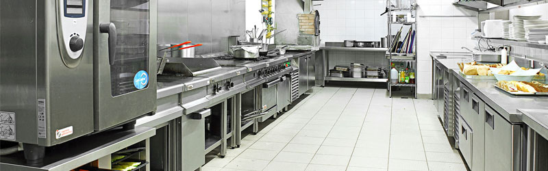

Nosotros

Nuestro prestigioso Instituto Gastronómico cuenta con cocinas de alta calidad, diseñadas para inspirar la creatividad y el aprendizaje culinario. Equipadas con lo último en tecnología gastronómica, nuestras amplias cocinas ofrecen un entorno perfecto para que nuestros estudiantes desarrollen sus habilidades con precisión y destreza. Cada estación de trabajo cuenta con equipos de vanguardia, permitiendo que los futuros chefs exploren y experimenten con confianza. Nuestros docentes, expertos en la industria culinaria, guían a los estudiantes en su proceso de aprendizaje en este ambiente estimulante. Descubre el placer de cocinar en un entorno donde la excelencia culinaria cobra vida en cada platillo.
Bienvenido a nuestro distinguido Instituto Gastronómico, ubicado en un enclave inspirador donde la tradición culinaria se mezcla con la vanguardia. Con una posición privilegiada en el corazón de la ciudad, nuestro prestigioso instituto es reconocido por su excelencia académica y una trayectoria impecable en la formación de chefs de clase mundial. Nuestra moderna estructura cuenta con instalaciones de última generación, desde amplias cocinas equipadas con tecnología de punta hasta aulas especializadas para catas y demostraciones. Aquí, nuestros estudiantes encuentran un entorno ideal para desarrollar sus habilidades culinarias y su creatividad. Nuestro equipo de profesores, formado por chefs expertos y reconocidos en la industria, impulsa a nuestros alumnos hacia la excelencia. El enfoque de nuestros programas va más allá de lo convencional, abarcando desde técnicas clásicas hasta las últimas tendencias gastronómicas. Si buscas una formación gastronómica avanzada y completa, un lugar que fusiona la tradición con la innovación, ¡nuestro instituto es tu destino para brillar en el mundo culinario!

Un título que abre puertas en el mundo culinario, respaldado por una escuela de cocina de renombre internacional."
Nuestro instituto gastronómico ofrece una formación completa y avanzada en todas las áreas culinarias. Desde técnicas clásicas hasta tendencias modernas, aquí encontrarás un mundo de conocimientos y oportunidades para destacar
Nuestras cocinas en el instituto gastronómico son un oasis de innovación y profesionalismo. Equipadas con tecnología de vanguardia, ofrecen un ambiente ideal para el desarrollo culinario más completo y avanzado.